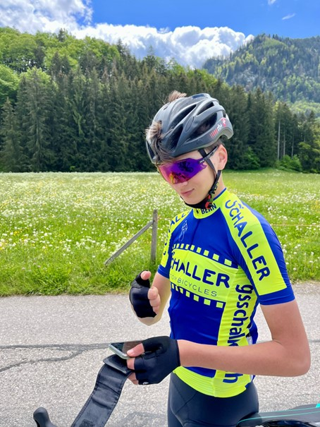
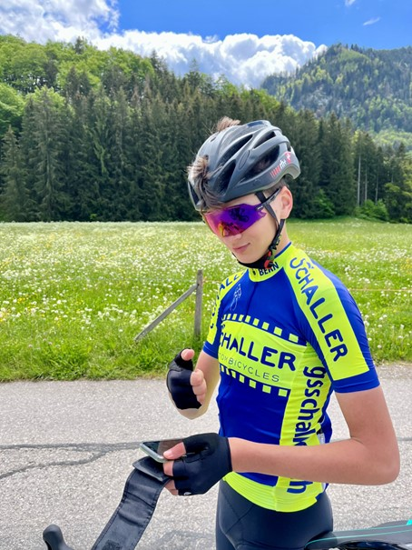
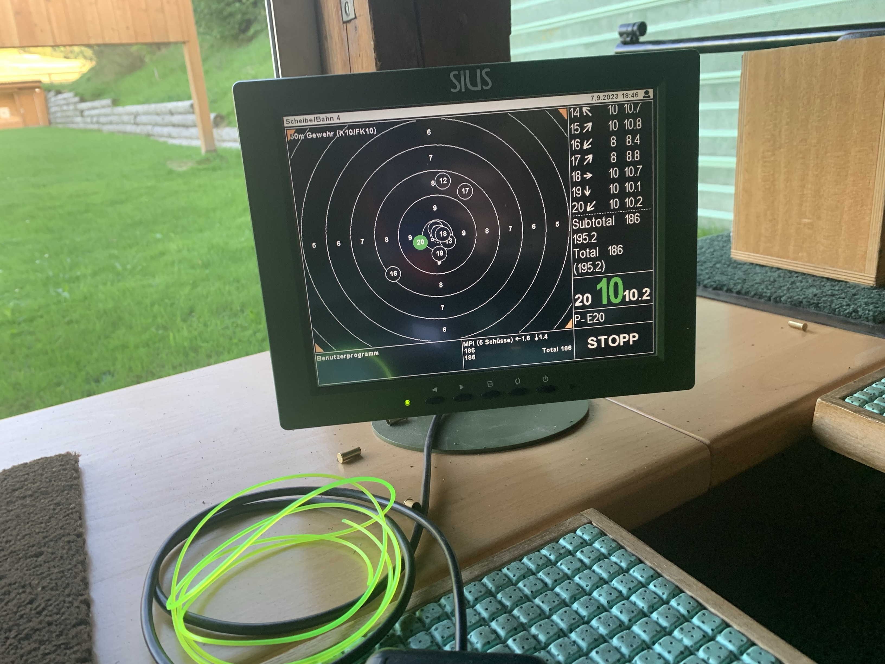
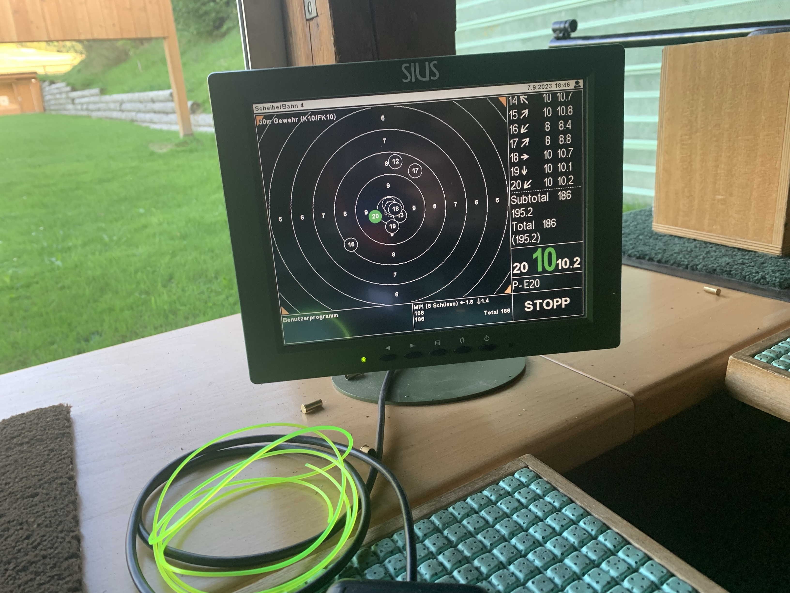
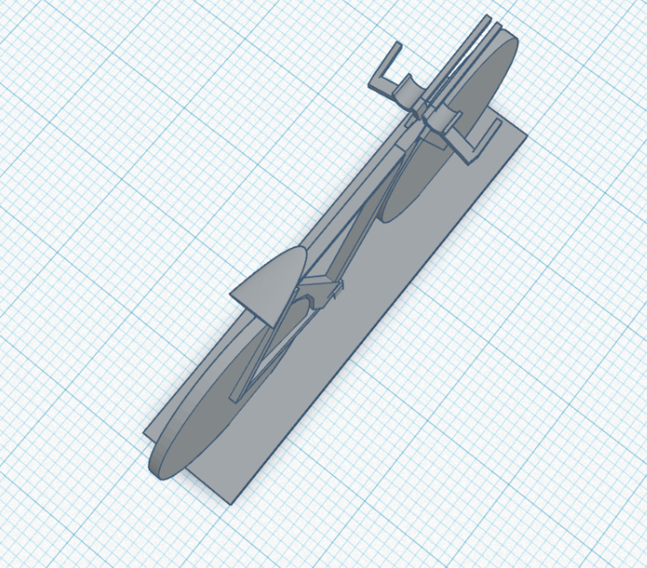
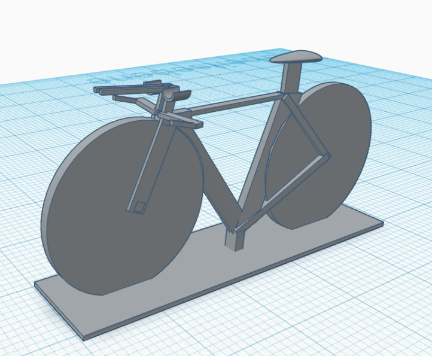
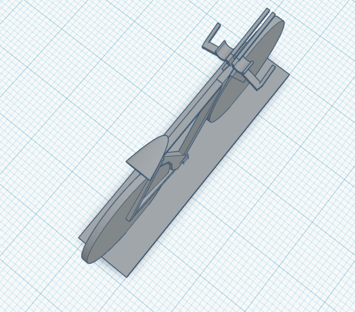
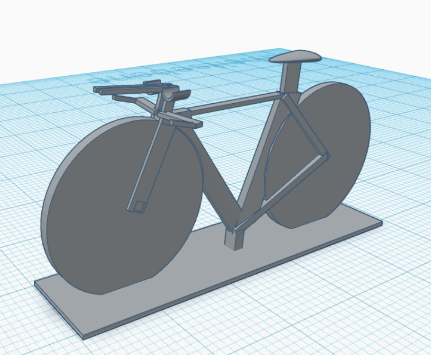

Benes Adam
Meine Stärken:
Effizient | Hartnäckig | Analytisch | Realistisch | Logisch | Präzise | Kritisch | Sachlich

Effizient | Hartnäckig | Analytisch | Realistisch | Logisch | Präzise | Kritisch | Sachlich
In meiner Freizeit betreibe ich als Hauptsport Radsport, doch ich interessiere mich auch viel für Autos und den Motorsport, ich war schon mehrmals beim Red Bull Ring und bin da auch ein GoKart-Rennen gefahren. Ich gehe auch sehr gerne mit meinen Freunden nach Lyss Go-Kart fahren. Ich gehe noch in den Schiess verein Belp und nehme auch an Wettkämpfen teil. Unten sind ein paar Bilder von mir bei meinen Hobbys:
 

 


Ich habe viel Erfahrung im CAD, weil ich einen Kurs besucht habe und auch zu Hause im CAD-Programm gearbeitet habe:

 



Ich habe diesen Auftrag von einem Lehrer im CAD-Kurs erhalten. Er wünschte sich Bauklötze, mit denen man Brüche, Prozentzahlen und Dezimalzahlen darstellen kann. Diese Klötze sollten zusammensteckbar sein, und wir haben sie schließlich mittels 3D-Druck hergestellt. Die kleinen Klötze haben ein Loch oben, um überschüssige Luft entweichen zu lassen. Dies verhindert, dass sich bei ihnen zu hoher Druck aufbaut, der das Zusammenstecken erschweren könnte. Ich habe 12 verschiedene Grössen gemacht. Rechts sieht man ein TT-Bike, das habe ich als eigenes Projekt gemacht, ich habe mir das TT-Bike dann 3D-gedruckt. Falls sie irgendwelche von diesen 3D-Modellen genauer anschauen wollen, können sie unten die Links zu den Modellen finden. Ich war auch schon als konstrukteur Schnuppern.
Ich habe angefangen in Minecraft zu programmieren, damals habe ich ein Minigame programmiert. Später habe ich Python gelernt und habe Grundkentnisse, jetzt lerne ich Python und HTML. Ich will in Zukunft auch noch C++ lernen.
Zu Hause fahre ich Rennvelo und kenne mich dementsprechend auch gut mit der Technik aus und kann selber an meinem Velo Services durchführen. Ausserdem war ich schon als Auto-Mechaniker, Flugzeug-Mechaniker und Fahrrad-Mechaniker schnuppern.
Ich habe für diese Website folgende Websites für Hilfe verwendet:
HTMLColorCodes.comStackoverflow.com
GitHub.com
3D-Modell Baustein 25%
3D-modell TT-Bike
Diese Website habe ich erstellt, damit ich mich selber vorstellen kann und dazu auch zeigen kann, was ich programmieren kann.
Mein Freund Linus hat mir das Design von dieser Website Vorgeschlagen, welches ich dann umgesetzt habe. Ich habe manchmal auch meine Eltern um Rat gefragt, wenn ich Hilfe brauchte, aber die Website habe ich komplett selber programmiert.